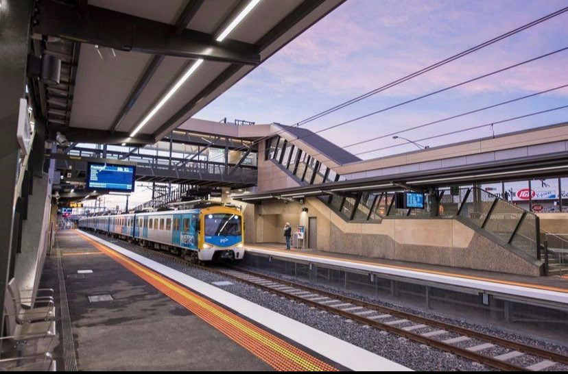

Throughout the duration of my bachelors degree, I've been given the oppurtunity to expand my knowledge within surveying and extend my professional network as well as work on some of Victoria's largest industry projects.

2021-2023, the Hurstbridge Line will see 3.5 kilometres of duplicate track and 3 station upgrades.
During 2022, A new overpass was built over the Frankston line joining Pound Road West and Remington Drive for easier access to Abbotts Road in Dandenong South .
During my fianl year at RMIT, I researched different monitoring systems used to monitor railway track conditions to find which system is most feasible for rail infrastructure project.

In 2021, I worked on the new Edithvale Station where a 1 kilometre trench was excavated for the platform and traffic overpass. Works also consisted of new structures, utilities and road furniture.